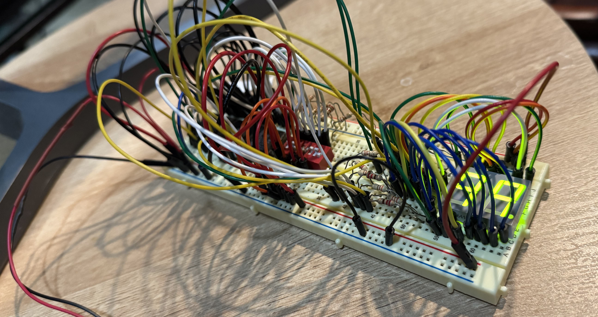

18 / Digital hardware / Built on a breadboard
EPROM decoder for a two-digit display
Designed the segment-encoding lookup table and assembled an EPROM decoder on a breadboard. Seven switch inputs select fourteen active-low outputs to drive a common-anode, two-digit seven-segment display.
- My contribution
- Decoder design, truth table & circuit assembly
- Tools
- EPROM · Digital interfaces · Breadboarding
- Outcome
- A documented breadboard implementation

Goal: store the display behavior in memory
The circuit maps a seven-bit DIP-switch input to a two-digit seven-segment display using an AM27C1024 EPROM. A stored lookup table replaces a separate Boolean implementation for each of the fourteen segment outputs.
Design around polarity and pin assignments
A common-anode display turns segments on with low outputs. I encoded each digit’s segment pattern in hexadecimal and constructed a truth table with that active-low behavior, so the memory contents agree with the electrical interface.
The seven switch bits connect to the least-significant address pins; unused address pins are grounded to keep the lookup in a defined address range. Two unused data outputs remain unconnected. The schematic and component list make those interface choices inspectable.
Outcome and technical evidence
The published notes document the programmed truth table, schematic, and assembled breadboard. Together, they connect the desired display, memory encoding, and physical pinout rather than stopping at a logical mapping.
This is evidence of translating behavior into a lookup table and integrating digital components with different signal conventions. The portfolio shows the documented build; it does not claim an exhaustive hardware test campaign.